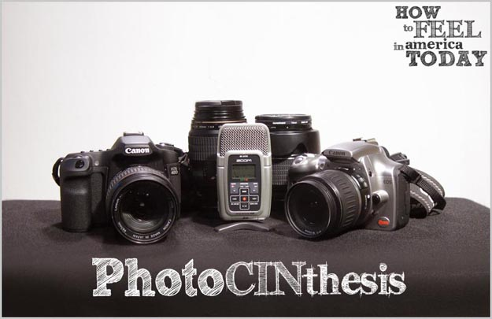

Photocinthesis Style
Converting still photographs to motion picture cinema
How How To Feel In America Today was created using an experimental cinema process that we developed and are calling 'Photocinthesis'.
The film was shot entirely on digital still cameras (Digital SLRs). The process is a blend of traditional cinematography, stop-frame animation, and photographic slide show. The short film is 35 minutes long.
The short film still maintains most aspects of a traditional narrative film, and the viewer should have no trouble adjusting their senses.
We chose this process for many reasons:
- We wanted the motion-picture to have a surreal, poetic feel to it.
- The process freed us from some of the technical constraints of traditional filmmaking. The pursuit of achieving perfect tracking shots and crystal-clear audio in the field can become a huge distraction. This process allowed us to focus on the story and acting in a way we would not have otherwise been able to.
- We wanted to test the limits of editing and juxtaposition as the primary means to tell a story. We were curious to see what would happen if freed from special effects, sync-sound, and even traditional frame-rates/motion.
- We were not pleased with the quality of many of the high-definition video formats available to us. We wanted the visual aesthetics of film with no compromises. We also wanted the experience of working within a workflow similar to those using chemical film stocks and digital intermediates.
Ironically, just a few days after the completion of principal photography the first Digital SLR cameras were announced that feature the ability to shoot high-definition video. Although this is an interesting development, this would not yield the stylistic aesthetics we desired.
-Joe and Nicole Wells-